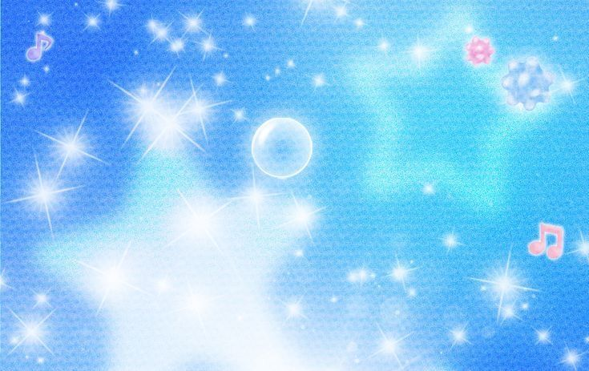
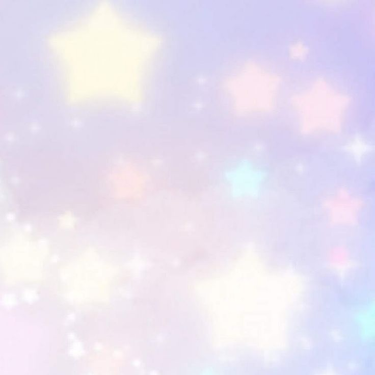
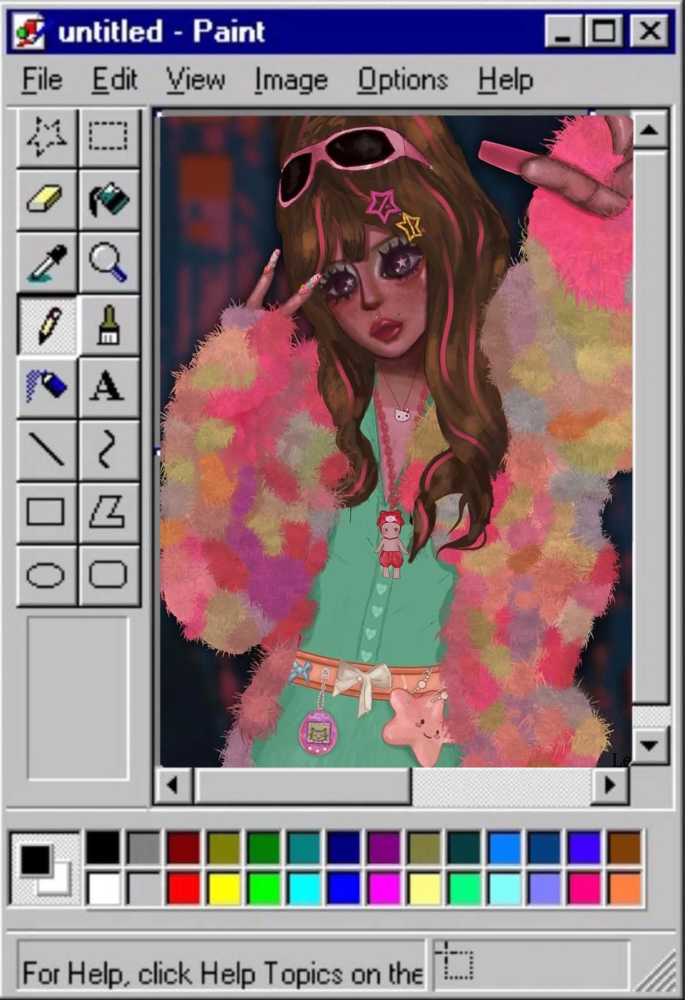
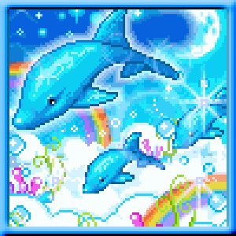
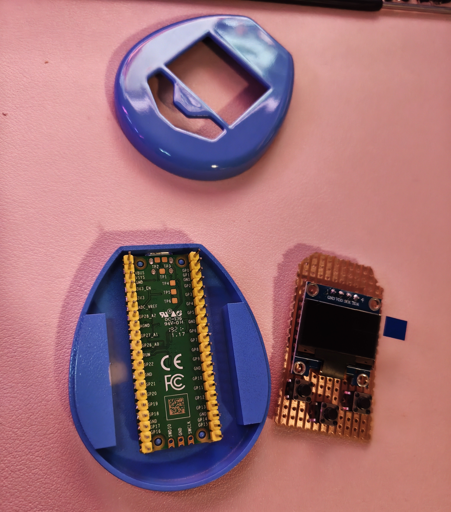

About Me
Leah
Art / music / little digital worlds
Hi, welcome to my little corner of the internet! I’m Leah, also known here as yourdreamstarlet. This is a home for the things I make and the things that make me happy.
Think art, music, Tamagotchis, and a little internet nostalgia. I love giving all those little pieces a place to live, somewhere between a digital scrapbook and a personal website.
Have a look around, put on a song, and stay a while. ♡






A little more
My little universe
This space is always a work in progress: a collection of favorite things, creative projects, and whatever I’m into lately.
You can explore my Tamagotchi project, find my music on Spotify (opens in a new tab), or say hello elsewhere on the internet.
Leave a little hello